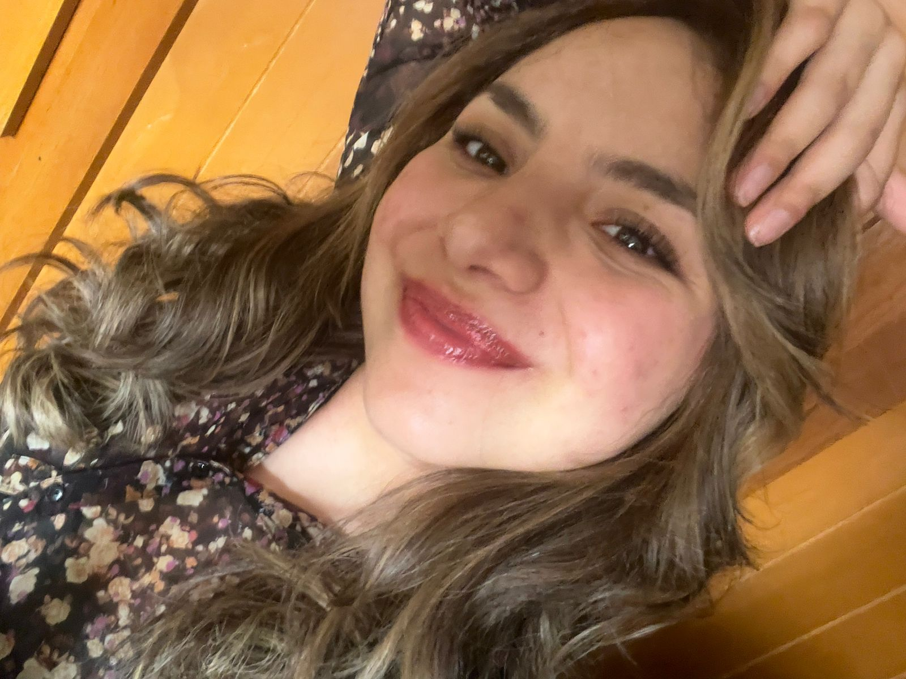

Hola, mi nombre es Fernanda pero me gusta que me digan Fer. Vivo en el municipio de Lerma y tengo 19 años. Soy estudiante de la Universidad Autónoma Metropolitana - Lerma, de la carrera Arte y Comunicacion Digitales. Voy en 5to Trimestre y hasta el momento me gusta lo que estudio, me apasiona lo que hago y una de mis metas es irme de intercambio a otro pais un trimestre. Dentro de mi carrera me llama mucho la atencion la fotografía, el cine y las artes plásticas, sigo en el camino de descubrir nuevas disciplinas y estoy abierta a aprender nuevas cosas. Fuera de lo académico, tengo muchos sueños y metas por cumplir; me apasiona mucho la gastronomía y la repostería, me encantaría egercer esa profesión. Me gustan mucho las flores y me encantaría ser florista, pero también soy amante de la moda o la decoracion de interiores y no estaria mal intentar ser modista o diseñadora de interiores, porque justamente yo quería estudiar diseño gráfico o gastronomía, y a pesar de que no estudie eso, no estoy muy elejada con lo que me gusta hacer. Mi carrera me permite expandir mis horizontes y podre de alguna forma hacer lo que tanto anhelo.